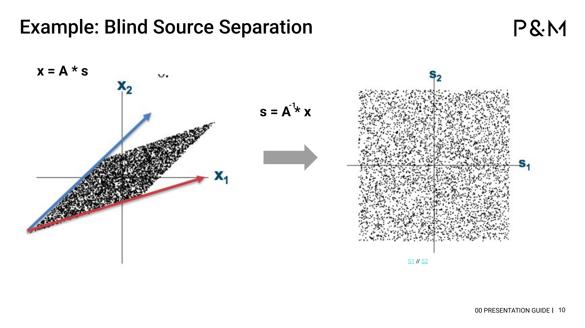
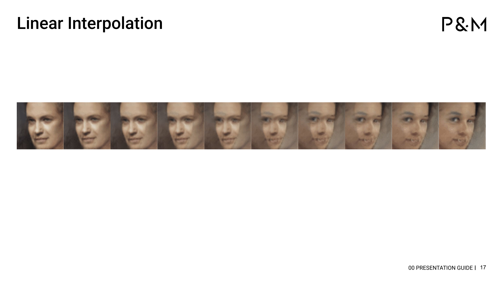
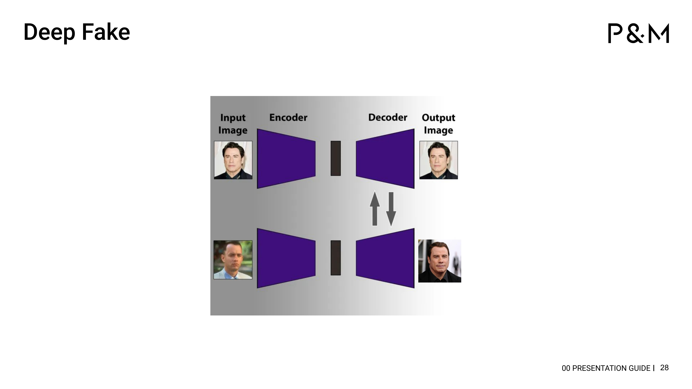

Deepfakes erklärt
Von Vektoren über Autoencoder bis zum Gesichtertausch – die Mathematik hinter der Illusion
Die Motivation
Im Sommer 2024 habe ich bei meiner Firma einen Tech Talk gehalten. Thema: Nichtlineare Operationen in hochdimensionalen Räumen. Klingt abstrakt. Ist es auch – bis man versteht, dass genau diese Mathematik hinter Deepfakes steckt.
Die Frage, die ich beantworten wollte: Wie schafft es ein Computer, das Gesicht einer Person so überzeugend auf eine andere zu übertragen? Die Antwort führt über Vektoren, Matrizen, Dimensionsreduktion, den Kernel-Trick und neuronale Netze – und am Ende ist es erschreckend einfach.
Dieser Beitrag folgt dem Bogen meiner Präsentation. Jedes Kapitel baut auf dem vorherigen auf. Am Ende wirst du verstehen, warum ein vertauschter Decoder ausreicht, um ein Gesicht zu fälschen.
Vektoren & Matrizen
Fangen wir ganz am Anfang an. Ein Vektor ist eine Liste von Zahlen. Zwei Zahlen beschreiben einen Punkt in der Ebene, drei einen Punkt im Raum:
$$\vec{A} = \begin{pmatrix} 2 \\ 3 \end{pmatrix} \quad \text{(2D)} \qquad \vec{B} = \begin{pmatrix} 1 \\ 4 \\ 2 \end{pmatrix} \quad \text{(3D)}$$Eine Matrix ist eine Tabelle von Zahlen, die einen Vektor in einen anderen verwandelt. Eine 3×3-Matrix kann einen Vektor drehen, skalieren oder projizieren – alles mit einer einzigen Multiplikation:
$$\vec{v}_{\text{neu}} = R \cdot \vec{v}_{\text{alt}}$$Probier es aus – hier kannst du einen Vektor live transformieren:
Orthogonalität
Ein Vektor im 3D-Raum lässt sich als Kombination der drei Basisvektoren $\vec{i}$, $\vec{j}$ und $\vec{k}$ darstellen. Diese stehen senkrecht aufeinander – sie sind orthogonal. Jeder beschreibt eine völlig unabhängige Richtung.
Was heißt das bei echten Daten? Nehmen wir menschliche Merkmale:
- Schuhgröße ↔ Körpergröße: hängen zusammen (korreliert)
- Alter ↔ Gewicht: hängen teilweise zusammen
- Augenfarbe ↔ Einkommen: völlig unabhängig (orthogonal)
Orthogonale Merkmale tragen keine redundante Information. Und genau das wird später wichtig: Wenn wir Redundanz in Daten finden und entfernen können, brauchen wir weniger Dimensionen.
Blind Source Separation
Ein Beispiel für die Kraft der Orthogonalität: das Cocktail-Party-Problem. Jemand spricht, gleichzeitig läuft Musik. Zwei Mikrofone nehmen die Mischung auf. Mathematisch:
$$\mathbf{x} = A \cdot \mathbf{s}$$wobei $\mathbf{s}$ die Quellsignale und $A$ die Mischmatrix ist. Wenn wir $A$ umkehren können:
$$\mathbf{s} = A^{-1} \cdot \mathbf{x}$$Die korrelierten, gemischten Daten (ein schiefes Parallelogramm) werden zu dekorrelierten, getrennten Signalen (ein sauberes Quadrat). Die Signale sind jetzt orthogonal zueinander.

Hochdimensionale Daten
Bisher haben wir in 2 oder 3 Dimensionen gedacht. Aber mathematisch kann man beliebig viele konstruieren. Ein Tesserakt ist ein Würfel im vierdimensionalen Raum – vorstellen kann man sich das kaum, aber rechnen kann man damit:
Was hat das mit Bildern zu tun? Ein Schwarz-Weiß-Bild mit 10×20 Pixeln hat 200 Pixelwerte. Man kann es als 200-dimensionalen Vektor auffassen – jeder Pixel ist eine Koordinate.
Sind diese 200 Dimensionen orthogonal? Nein. Benachbarte Pixel korrelieren stark. Wenn ein Pixel hell ist, ist sein Nachbar wahrscheinlich auch hell. Es steckt Redundanz in den Daten.
Dimensionsreduktion – PCA
Die Hauptkomponentenanalyse (PCA) sucht ein neues Koordinatensystem, in dem die Achsen orthogonal sind und die Varianz maximal erklären. Die erste Hauptkomponente zeigt in die Richtung der größten Streuung, die zweite senkrecht dazu.
Probier es aus – zeichne Punkte und sieh die PCA-Achsen live:
Das Ergebnis bei Bildern: Aus 10.000 Pixeln werden 2.500 Hauptkomponenten – und das Bild sieht fast identisch aus. Der Rest war Redundanz. Das ist Dimensionsreduktion.
Wer das vertiefen möchte: Im Eigenwerte-Post erkläre ich, warum PCA mathematisch eine Eigenwertzerlegung der Kovarianzmatrix ist – und im Fourier-Post, warum die DCT-Transformation (die JPEG verwendet) im Grunde dasselbe tut.
Die Grenze der Linearität
Dimensionsreduktion allein reicht nicht. Wenn wir linear zwischen zwei Gesichtern interpolieren, passiert das hier:

Die Zwischenbilder sind keine Gesichter – sie sind Überlagerungen. Im Pixelraum ist der gerade Weg zwischen zwei Gesichtern kein Gesicht.
Ganz anders bei einer nichtlinearen Interpolation: Hier entstehen tatsächlich neue, plausible Gesichter als Zwischenschritte.
Der Kernel-Trick
Und hier kommt der entscheidende Trick: Dimensionserhöhung. Daten, die in 2D nicht linear trennbar sind, werden es in einem höherdimensionalen Raum:
Links: Zwei Klassen in Kreisform – keine Gerade kann sie trennen. Rechts: Durch die Transformation $z = x^2 + y^2$ (Heben in die dritte Dimension) wird eine einfache Ebene zur Trennfläche.
Zusammen ergibt sich ein elegantes Doppelspiel:
- Dimensionsreduktion – um Redundanz zu entfernen (PCA, DCT)
- Dimensionserhöhung – um Nichtlinearität handhabbar zu machen (Kernel-Trick)
Ein neuronales Netz kann beides gleichzeitig.
Neuronale Netze
Ein einzelnes Neuron nimmt mehrere Eingaben $x_i$, multipliziert jede mit einem Gewicht $w_i$, summiert alles auf, und schickt das Ergebnis durch eine Aktivierungsfunktion $\varphi$:
$$y = \varphi\left(\sum_i w_i \cdot x_i + b\right)$$Die Aktivierungsfunktion ist der Schlüssel: Sie ist nichtlinear. Ohne sie wäre das ganze Netz nur eine große Matrixmultiplikation – und könnte nichts, was eine einzelne Matrix nicht auch könnte.
Schichtet man viele Neuronen hintereinander – Input Layer, Hidden Layers, Output Layer – entsteht ein neuronales Netz. Die Hidden Layers lernen automatisch, welche Dimensionen erhöht und welche reduziert werden sollen.
Wer mehr über die emergenten Eigenschaften solcher Netze wissen möchte: der Emergenz-Post geht genau darauf ein.
Autoencoder
Ein Autoencoder ist ein spezielles neuronales Netz mit Sanduhr-Architektur:
- Encoder: Komprimiert ein hochdimensionales Bild in einen niedrigdimensionalen Latent Space
- Decoder: Rekonstruiert das Bild aus der komprimierten Darstellung
Das Trainingsziel: Das Ausgangsbild soll dem Eingangsbild möglichst ähnlich sein. Der Engpass in der Mitte – der Latent Space – zwingt das Netz, nur die wesentliche Information zu behalten.
Das ist nichtlineare Dimensionsreduktion. Hier kannst du es ausprobieren – zeichne eine Ziffer und sieh, wie der Autoencoder sie rekonstruiert:
Latent-Space-Arithmetik
Und jetzt passiert die Magie. Im Latent Space kann man mit Gesichtern rechnen wie mit Vektoren:
$$\text{lächelnde Frau} - \text{neutrale Frau} + \text{neutraler Mann} = \text{lächelnder Mann}$$Das funktioniert, weil der Latent Space die Gesichter in orthogonale Merkmale zerlegt hat: Geschlecht, Ausdruck, Blickrichtung, Beleuchtung. Jede Richtung im Latent Space entspricht einer semantischen Eigenschaft.
Hier kannst du den Latent Space einer Ziffern-VAE erkunden:
Wenn dir das bekannt vorkommt: Es ist derselbe Trick, den Word2Vec für Wörter nutzt. König - Mann + Frau = Königin funktioniert nach exakt demselben Prinzip. Der Eigenwerte-Post erklärt, warum.
Deepfakes – Der Decoder-Swap
Und damit sind wir am Ziel. Der Deepfake-Trick ist erschreckend einfach:
- Trainiere zwei Autoencoder – einen für Person A, einen für Person B
- Beide teilen sich denselben Encoder, haben aber verschiedene Decoder
- Der Encoder lernt eine gemeinsame Gesichtsrepräsentation im Latent Space
- Der Swap: Nimm das Bild von Person A, schicke es durch den gemeinsamen Encoder – und dann durch den Decoder von Person B

Das Ergebnis: Die Mimik und Kopfhaltung von A, aber das Aussehen von B. Ein Deepfake. Nicht Magie – sondern Dimensionsreduktion, Dimensionserhöhung und ein vertauschter Decoder.
Ethik & Erkennung
Deepfakes sind beunruhigend. Aber Verständnis ist besser als Panik. Wer weiß, wie sie funktionieren, kann sie besser erkennen:
- Artefakte: Unnatürliche Übergänge an Haaransatz, Ohren, Zähnen
- Konsistenz: Beleuchtung auf dem Gesicht passt nicht zum Rest des Bildes
- Blinzeln: Frühe Deepfakes blinzeln zu selten (Trainingsdaten-Bias)
- Forensik: Frequenzanalyse zeigt GAN-typische Muster im Spektrum
Die Technologie ist neutral. Sie ermöglicht genauso gut medizinische Simulation, Filmnachbearbeitung oder Barrierefreiheit (Lippensynchronisation für Gehörlose). Die Frage ist nicht, ob wir sie verstehen sollen – sondern ob wir es uns leisten können, sie nicht zu verstehen.
Dieser Beitrag basiert auf einem Tech Talk, den ich bei P&M Agentur gehalten habe. Die Originalfolien und alle interaktiven Visualisierungen sind frei zugänglich.
Häufige Fragen
Wie funktioniert ein Deepfake technisch?
Ein Deepfake nutzt zwei Autoencoder mit gemeinsamem Encoder, aber unterschiedlichen Decodern. Das Bild von Person A wird durch den gemeinsamen Encoder geschickt und dann durch den Decoder von Person B rekonstruiert. Das Ergebnis: Mimik und Kopfhaltung von A, Aussehen von B.
Was ist der Unterschied zwischen PCA und einem Autoencoder?
PCA ist eine lineare Dimensionsreduktion – sie findet das beste rechtwinklige Koordinatensystem. Ein Autoencoder ist die nichtlineare Verallgemeinerung: Er kann beliebig komplexe Mannigfaltigkeiten lernen, weil seine Aktivierungsfunktionen nichtlinear sind.
Was ist der Kernel-Trick?
Der Kernel-Trick hebt Daten in einen höherdimensionalen Raum, wo sie linear trennbar werden. Mathematisch benötigt man die expliziten Höherdimensionen nie – es reicht, die Skalarprodukte zwischen Datenpunkten in der höheren Dimension berechnen zu können.
Warum erkennen wir Deepfakes manchmal trotzdem?
Weil Modelle mit unzureichenden Trainingsdaten Artefakte hinterlassen: unnatürliches Blinzeln, inkonsistente Beleuchtung an Haaransatz oder Ohren, Muster im Frequenzspektrum, die in echten Bildern nicht vorkommen.